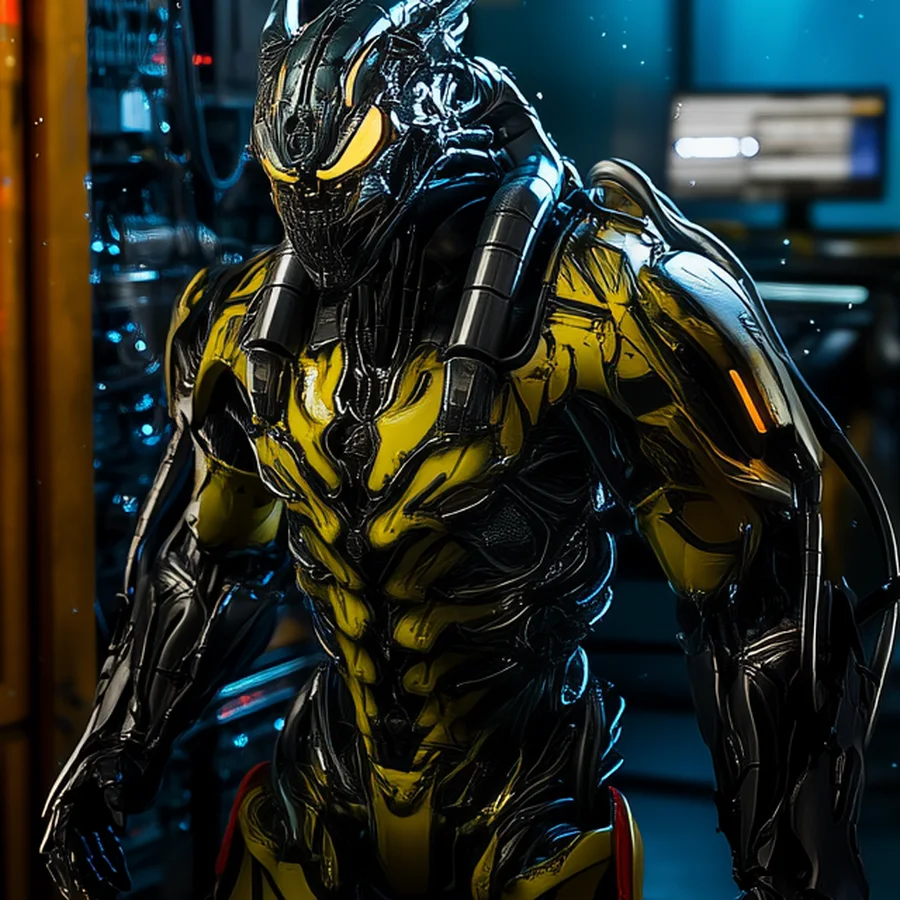
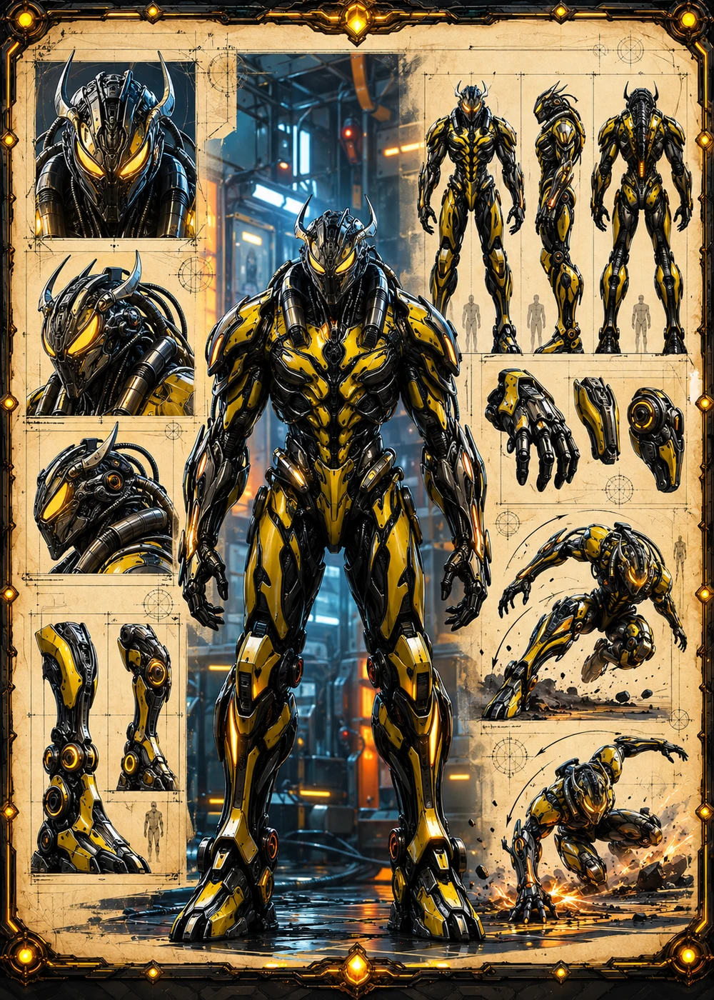

©
©
GENEZYS ARCHIVE · Earth 2 · Synthbot
Galvorn
Blight Conjurer

Archive record
Galvorn shrouds the battlefield in a toxic fog that the Horde can breathe and its enemies cannot. The Noxious Veil strikes the flanks and the center of an enemy line at once. Wherever Galvorn walks, the Spore takes root.
Combat signature
Noxious Veil
150 Cosmara
230 Animus
260 Vitalis
Shrouds battlefield in toxic fog: Deals 80 damage to enemies on the edges and 90 damage to the enemy in the middle.
Genezys 10:06 ™&©2026LEGIONS
